任务1.2.1人工智能应用支撑认知#
【学习目标】#
1.知识目标
（1）了解人工智能技术的三大基础支撑；
（2）了解数据标注的基本概念和完整流程；
（3）了解经典机器学习算法；
（4）理解监督学习的特；
（5）掌握准备模型训练数据的方法；
（6）了解算力的来源
2.能力目标
（1）能根据学习和工作获取算力
（2）能分析实际应用场景，选择合适类型的算法模型。
（3）会使用工具进行数据标注
3.素质素养目标
（1）培养学生科技强国的发展意识；
（2）培养学生养成数据保护意识；
（3）培养学生精益求精的科学素养；
（4）培养学生“量变到质变”辩证思维方式。
【任务分析】#
1.重点
（1）算力对人工智能应用的支撑作用；
（2）数据对人工智能应用的支撑作用；
（3）算法对人工智能应用的支撑作用。
2.难点
（1）算力实现的原理和基础；
（2）数据与智能的关系。
【知识链接】#
一、人工智能技术基础支撑-算力
2016年，世界顶级围棋高手李世石与AI围棋对决，最后竟以1:4惨败于谷歌AlphaGO。人工智能凭什么能够战胜人类？答案是AI背后的超级计算机算力，当时的ALphaGo消耗了176个GPU和1202个CPU的计算资源。这些功能强大的计算机在人工智能技术飞速发展的今天具有不可或缺的作用。AI通过算力处理大量的相关数据，并以神经网络不断学习成长，最终获得技能，战胜人类选手。算力究竟有多重要？中国工程院院士、浪潮集团首席科学家王恩东认为“人类社会已经快速步入到智慧时代，计算力是这个时代的核心驱动力、生产力。”

1.人工智能的算力#
算力，也称作计算力，就是设备的计算能力，也是数据处理的能力。AI的许多数据处理涉及矩阵乘法和加法。不管是图像识别等领域常用的CNN算法，还是语音识别、自然语言处理等领域的RNN算法，本质上都是矩阵或vector的乘法、加法，然后配合一些除法、指数等算法。CPU可以拿来执行AI算法，但因为内部有大量其他逻辑，而这些逻辑对于目前的AI算法来说是完全用不上的，所以CPU并不能达到最优的性价比。因此，具有海量并行计算能力、能够加速AI计算的AI芯片应运而生。
以4GHz 128bit的POWER8的CPU为例，假设是处理16bit的数据，该CPU理论上每秒可以完成16X4G=64G次。再以大名鼎鼎的谷歌的TPU1为例，主频为700M Hz，有256X256=64K个乘加单元，每个时间单元可同时执行一个乘法和一个加法。那就是128K个操作。该YPU论述每秒可完成=128K X 700MHz=89600G=大约90T次。可以看出在AI算法处理上，AI芯片比CPU快1000倍。如果训练一个模型，TPU处理1个小时，放在CPU上则要41天。简而言之，人工智能的算力主要取决于芯片。
2 AI芯片#
从广义范畴上讲，面向AI计算应用的芯片都可以称为AI芯片。狭义上指专门针对AI算法做了特殊加速设计的芯片，以GPU、FPGA、ASIC为代表的AI芯片，基于传统芯片架构对某类特定算法或者场景进行AI计算加速的芯片，是目前可大规模商用的技术路线。
GPU（Graphics Processing Unit），即图形处理器，是一种由大量核心组成的大规模并行计算架构，专为同时处理多重任务而设计。良好的矩阵计算能力和并行计算优势，最早被用于AI计算，在数据中心中获得大量应用。GPU采用并行架构，超过80%部分为运算单元，具备较高性能运算速度。相比较下，CPU仅有20%为运算单元，更多的是逻辑单元，因此CPU擅长逻辑控制与串行运算，而GPU擅长大规模并行运算，但是GPU无法单独工作，必须由CPU进行控制调用才能工作。GPU目前是最主流的通用性AI芯片。在通用性芯片领域，除了英特尔和AMD的CPU外，美国的英伟达公司（Nvidia）是行业龙头，几乎垄断了人工智能的GPU市场。
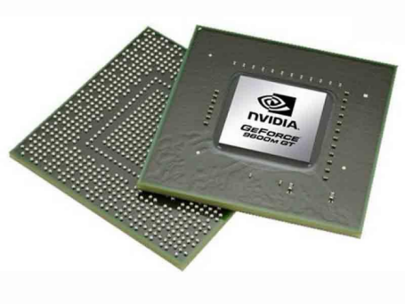
FPGA（Field-Programmable Gate Array），即现场可编程门阵列，作为专用集成电路领域中的一种半定制电路出现，适用于多指令，单数据流的分析，与GPU相反，因此常用于推理阶段。FPGA灵活性较好、处理简单指令重复计算比较强，用在云计算架构形成CPU+FPGA的混合异构中相比GPU更加的低功效和高性能，适用于高密度计算，在深度学习的推理阶段有着更高的效率和更低的成本。国外包括亚马逊、微软都推出了基于FPGA的云计算服务，国内包括腾讯云、阿里云早在2017年推出了基于FPGA的服务，百度大脑也使用了FPGA芯片，被Xilinx收购的深鉴科技也是基于FPGA来设计深度学习的加速器架构来灵活扩展用于服务器端和嵌入式端。
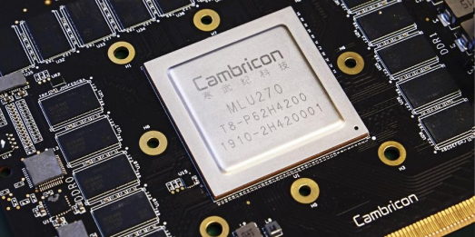
ASIC（Application Specific Integrated Circuits），即专用集成电路，是一种为专用目的设计的，面向特定用户需求的定制芯片。与GPU和FPGA不同，GPU和FPGA除了是一种技术路线之外，还是实实在在的确定的产品，而ASIC就是一种技术路线或者方案，其呈现出的最终形态与功能也是多种多样的。近年来涌现出的类似TPU、NPU、VPU、BPU等令人眼花缭乱的各种芯片，本质上都属于ASIC。ASIC不同于 GPU 和 FPGA 的灵活性，定制化的 ASIC 一旦制造完成将不能更改，所以初期成本高、开发周期长的使得进入门槛高。目前，大多是具备 AI 算法又擅长芯片研发的巨头参与，如 Google 的 TPU。由于完美适用于神经网络相关算法，ASIC 在性能和功耗上都要优于 GPU 和 FPGA，TPU1 是传统 GPU 性能的 14-16 倍，NPU 是 GPU 的 118 倍。
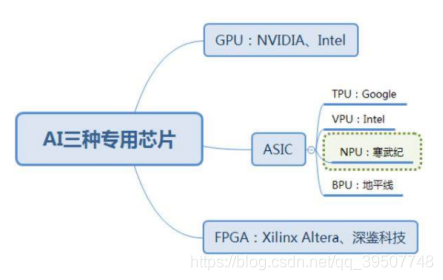
除了以上已经达到商用规模的AI芯片，还有比较前沿性的研究，例如类脑芯片、可重构通用AI芯片等。类脑芯片 在架构上直接通过模仿大脑结构进行神经拟态计算，完全开辟了另一条实现人工智能的道路，而不是作为人工神经网络或深度学习的加速器存在、目前该类芯片还只是小规模研究与应用，代表产品有IBM的TrueNorth和清华大学的“芯机”系列芯片。可重构通用AI芯片遵循软件定义芯片思想，可重构计算技术允许硬件架构和功能随软件变化而变化，兼具处理器的通用性和ASIC的高性能和低功耗，是实现软件定义芯片的核心，被公认为是突破性的下一代集成电路技术。清华大学微电子学研究所设计的AI芯片Thinker，采用可重构计算架构，能够支持卷积神经网络、全连接神经网络和递归神经网络等多种AI算法。
超级计算机是目前世界上功能最强大的计算机。与普通的个人计算机不同，超级计算机的最终竞争指标之一是计算能力，超级计算机前10名中，当前两个功能最强大的超级计算机都来自美国，在前十名中，美国排名第五，中国排名第二。我国的神威“太湖之光”超级计算机排名是世界第三，全部使用具有中国自主知识产权的芯片。
3 AI芯片应用#
AI芯片部署的位置有两种：云端、终端。云端，即数据中心，在深度学习的训练阶段需要极大的数据量和大运算量，单一处理器无法独立完成，因此训练环节只能在云端实现。终端，即手机、安防摄像头、汽车、智能家居设备、各种IoT设备等执行边缘计算的智能设备。根据部署位置，可以分为云AI芯片和端AI芯片。
AI的实现包括两个环节：训练、推理。训练，是指通过大数据训练出一个复杂的神经网络模型，即用大量标记过的数据来“训练”相应的系统，使之可以适应特定的功能。训练需要极高的计算性能，需要较高的精度，需要能处理海量的数据，需要有一定的通用性，以便完成各种各样的学习任务。推理，是指利用训练好的模型，使用新数据推理出各种结论。即借助现有神经网络模型进行运算， 利用新的输入数据来一次性获得正确结论的过程。也有叫做预测或推断。所以根据承担任务的不同，AI芯片可以分为：用于构建神经网络模型的训练芯片，利用神经网络模型进行推理预测的推理芯片。
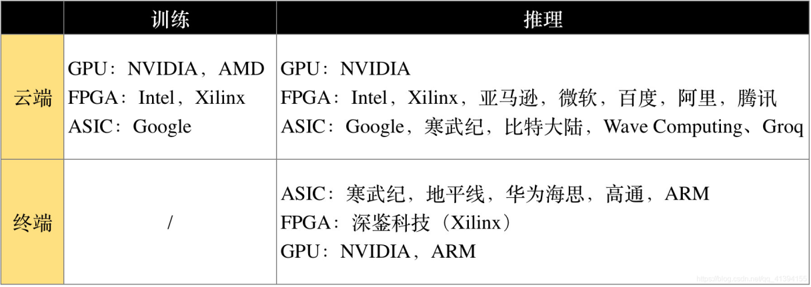
4 智算中心，赋能产业AI化#
随着数据总量的增长和智能化社会构建需求的扩大，人工智能产业对算力的要求越来越高。中国工程院院士、浪潮集团首席科学家王恩东认为，在新基建各大领域之中，相比云计算和大数据，人工智能对算力的需求几乎是“无止境”的。根据人工智能研究组织Open AI统计，从2012年至2019年，随着人工智能深度学习“大深多”模型的演进，模型计算所需计算量已增长30万倍。斯坦福大学发布的《AI Index 2019》报告也显示，2012年以后，算力需求每三四个月就翻一番，现有算力面临捉襟见肘的局面。只有通过超级计算机的研究和开发，我们才有机会成为全球人工智能研究中心，中国也进入了人工智能领域的第一梯队。随着新基建的加速建设，人工智能与大数据、云计算、物联网等融合也会进一步加快，智慧医疗、无人驾驶、智慧城市、智慧金融等应用场景，背后都需要算力支撑。“如果算力不能快速提升，那我们将不得不面临一个糟糕的局面：当规模庞大的数据用于人工智能的训练学习时，数据量将超出内存和处理器的承载上限，整个训练过程将变得无比漫长，甚至完全无法实现最基本的人工智能。”浪潮集团人工智能和高性能计算部总经理刘军说。事实上算力成本是人工智能企业发展的一大阻碍，企业花钱买定制化算力、建计算中心，会造成一定程度上的资源浪费，且单靠部分企业建设的计算中心适用面有限，将智能计算中心作为转型升级的基础设施投资，更能满足产业智能化发展需要。
近年已有不少超算中心运用人工智能芯片和服务器来强化其算力，提升对人工智能产业的服务能力，简单来说，这一路径是对传统超算中心“AI化”。比如在西北，2019年，西安的沣东新城搭建了西北地区首个人工智能领域的新型基础设施——沣东人工智能计算创新中心。在粤港澳大湾区，由中科院、广东省、珠海市、横琴新区共同建设的横琴先进智能计算平台也是一例。这一项目也是粤港澳大湾区首个先进智能计算平台，被列入广东省政府2019年工作报告，并纳入了广东省委、省政府印发的《关于贯彻落实“粤港澳大湾区发展规划纲要”的实施意见》。
2020年4月20日，国家发改委首次明确新型基础设施的范围，新型基础设施主要包括三个方面内容： 一是信息基础设施;二是融合基础设施;三是创新基础设施。其中，信息基础设施主要是指基于新一代信息技术演化生成的基础设施，比如，以5G、物联网、工业互联网、卫星互联网为代表的通信网络基础设施，以人工智能、云计算、区块链等为代表的新技术基础设施，以数据中心、智能计算中心为代表的算力基础设施等。智能计算中心明确被纳入了新基建的范围中。
2020年11月17日，国家信息中心信息化和产业发展部联合浪潮发布了《智能计算中心规划建设指南》。《指南》对智能计算中心的规划建设给出了清晰的指导，并对智能计算中心进行明确定义：智能计算中心是基于最新人工智能理论，采用领先的人工智能计算架构，提供人工智能应用所需算力服务、数据服务和算法服务的公共算力新型基础设施，通过算力的生产、聚合、调度和释放，高效支撑数据开放共享、智能生态建设、产业创新聚集，有力促进AI产业化、产业AI化及政府治理智能化。

二、人工智能技术基础支撑-算法
做饭机器人一直是人类的追求之一，如何让机器人掌握不同菜系的烹饪方法就是我们的算法。我们通过量化各个步骤、分析各种情况给出不同反应，指导机器人学习人类的烹饪过程是复杂的算法设计过程。
1.算法的定义：#
算法就是解决某个问题的计算方法及步骤。计算机的算法则是让计算机按照何种方法进行判断，计算。
2.机器学习的概念：#
机器学习（Machine Learning，ML）是研究怎样让计算机具备像人类一样的学习能力，是人工智能的核心部分。人类的学习是一个人根据过往的经验，对一类问题形成某种认识或总结出一定的规律，然后利用这些知识来对新的问题下判断的过程。因此，机器学习是指用某些算法指导计算机利用已知数据学习得出适当的模型，并应用此模型对新的情况给出判断。
机器学习根据学习方式的不同可以分为三类：监督学习，无监督学习，强化学习。监督学习与其他两类学习的不同之处就是输入的训练样本带有正确输出的标记，其他两类的样本没有，强化学习是计算机与环境的交互过程中以追求更高的性能为标准不断优化算法模型。
监督学习：又称有导师的学习，输入的训练样本带有输出标记，计算机不断调整模型使其输出与样本标记一致。
无监督学习：输入的训练样本没有输出标记，计算机需要从样本中找出数据的内置结构，抽取出通用的规则，无监督学习通常通过聚类的方式处理复杂的数据。
强化学习：计算机在与环境的交互过程中，通过统计环境的反馈，动态规划模型来达到最优性能的一类学习方法。强化学习通过试错的方式，根据不同的选择得到的反馈来判断性能，不断调整解决方案。
机器学习发展到今天，产生了很多优秀的算法，图1.2.1.6列出了按照算法的学习方式分类的几种经典的机器学习算法（按照学习方式的分类），以便于人们在建模和算法选择的时候可以根据输入数据选择最合适的算法来获取最好的结果。
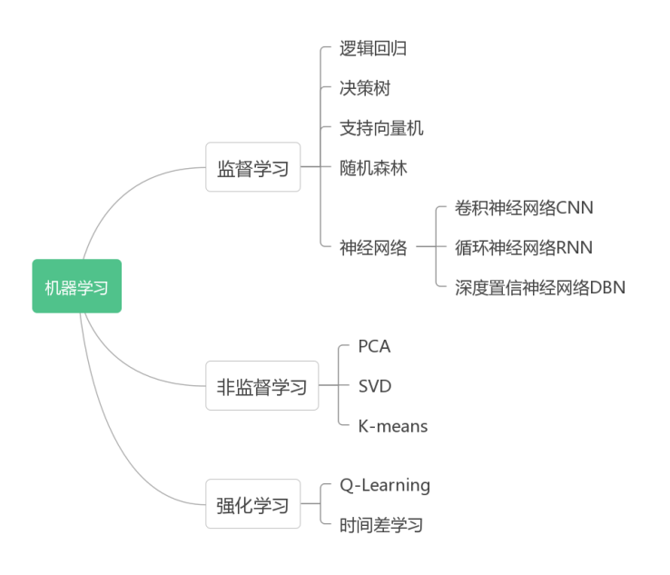
图1.2.1.6 常见机器学习算法分类表
3.深度学习的概念：#
深度学习（Deep Learning,DL）是机器学习的一个子集，通过模仿人类大脑的生物学和过程，学习样本数据的内在规律和表示层次，最终让机器能够像人一样具有分析学习能力，能够识别文字、图像和声音等数据。
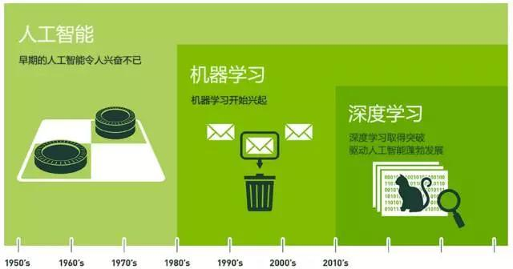 图1.2.1.7 人工智能、机器学习、深度学习三者间的关系
4.神经网络的概念#
生物神经网络是指生物的大脑神经元、细胞、触点等组成的网络。深度学习研究模仿生物的大脑的神经网络建立一个类似的学习策略，即人工神经网络（Artificial Neural Networks，ANNs），是模拟生物神经系统建立的计算机模型。
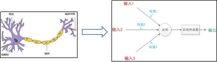
由上图可以看到生物的大脑的基本单元——神经元的组成，它以细胞体为主体，由许多向周围延伸的不规则树枝状纤维进行联接构成神经网络。我们模仿生物神经元设计的神经元模型是一个包含输入，输出与计算功能的模型。输入可以类比为神经元的树突，而输出可以类比为神经元的轴突，计算则可以类比为细胞核。大量的人工神经元（节点）联结构成神经网络。本书后面所提的神经网络是指计算机领域研究的神经网络，即人工神经网络。
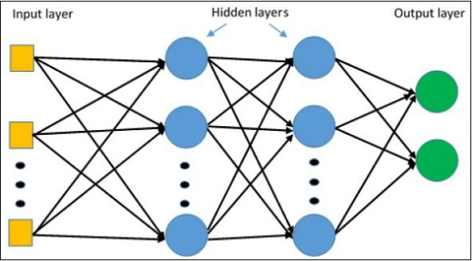 图1.2.1.9 神经网络结构图
神经网络是由层构成的，一般包括输入层、输出层、隐含层。每个节点的输出函数为，其中x是输入向量，y是输出向量，α( )是激活函数，b是偏移向量，W是权值矩阵，每一层将输入x通过如上公式得到输出y。激活函数给神经元引入了非线性因素，使得神经网络可以任意逼近任何非线性函数。每个神经元之间的连线对应一个权值，神经网络中的所有权值组成一个权值矩阵W。
神经网络在外界输入信息的基础上改变了其内部结构，对输入和输出之间复杂的关系进行建模，自适应的探索数据的模式。神经网络的学习过程：把训练集中的每个输入加到神经网络中，神经网络根据预测值与目标值之间的误差（通过损失函数计算得到）不断调整网络各层的权值矩阵（W）与b，使神经网络的预测值与目标值一致，待各层权值都收敛到一定值，学习过程结束。然后我们就可以用生成的神经网络来对未知数据进行判断。
2010年，深度学习得到突飞猛进的发展，为代表的神经网络模型有卷积神经网络(ConvolutionalNeuralNetworks,CNN)、循环神经网络(RecurrentNeuralNetwork,RNN)、长短时记忆神经网络(Long/ShortTermMemoryNetwork, LSTM)、深度信念神经网络(DeepBeliefNetwork,DBN)等。
深度神经网络的训练过程主要包括以下五步：
第一步：输入样本到网络，初始化参数，对权值矩阵W，偏移向量b进行随机初始化。
第二步：进行前向传播，得到输出
第三步：通过损失函数计算实际输出与理想输出之间的差
第四步：反向传播，以极小化误差为标准调整权值矩阵
第五步：梯度下降，更新参数
在神经网络训练的中，有三个重要的概念Epoch、Batch Size和迭代：
Epoch：当一个完整的数据集通过了神经网络一次并且返回了一次，这个过程称为一个 epoch。
Batch Size：当一次输入一个数据集对于计算机而言太庞大的时候，就需要把它分成多个小块。也就是将数据集分成几个batch。Batch Size则是一个 batch 中的样本总数。
迭代：是batch 需要完成一个epoch 的次数。
TensorFlow是目前流行的神经网络算法库，被广泛用于各类机器学习算法的编程实现。Tensorflow playground展示了数据是如何“流动”的。能让你在浏览器中运行真实的神经网络，并且可以点击按钮和调整参数，了解神经网络是怎么工作的。体验地址：tensorflow.org.
三、人工智能技术基础支撑-数据
要实现一个功能完善的人工智能应用，需要的一个关键因素就是数据。类似于要做一道好菜，必须要有好的原材料。数据，就是人工智能应用的原材料。那要如何获取原材料，如何对原材料进行加工以便更好的开发人工智能应用呢？
1.数据采集#
如果我们做菜的时候只有白菜豆腐之类的话，那么无论如何也是做不出红烧肉的。同样，在数据处理的这个流程，采集的数据决定了数据分析挖掘的上限。
比如，如果想了解APP的终端用户在使用什么样的手机，就需要去采集终端用户所用设备的机型参数，比如说设备的品牌、型号等信息。当我们拿到这样的数据以后，我们才能够去分析终端用户的各种品牌分布设备分布，从而了解用户设备的使用情况。
2.数据的采集源及采集方式#
在当今的大数据时代，数据的采集源往往是高度多样化的，而不同的数据源也往往需要不同的采集手段来进行针对性的采集。一般来讲，数据源包括但不限于如下几类：
第一类是端上数据，即一个服务的客户端或者服务器端产生的数据，例如我们的用户点了哪些页面或内容这样的数据。这类数据往往需要我们埋点进行采集。埋点指的是，我们针对用户特定的行为进行跟踪与捕捉的过程，这些捕捉到的行为经统计后常常会用于后续的对产品的迭代与优化。做埋点可以使用当前市面上现成的第三方服务，也可以自己做建设或开发。对于中小企业来说使用这种第三方的SDK服务性价比更高。
第二类常见的数据源，就是开放数据。开放数据指的是开放给所有人的数据，比如网页的内容数据，或者特定行业的公开数据。这类数据往往需要使用爬虫技术来采集。
第三类是其他平台的数据比如说开发者想拿到自己微信公众号的数据，这个数据其实是存在微信那里的。这个时候，我们可以通过微信提供的规范API接口服务来调取自身的这个公众号的数据。
第四类是物理数据。物理数据指的是用户在物理世界中所产生的数据，例如用户刷脸购物的日志数据，用户的步数数据等。这类数据的采集往往要通过传感器来进行AIDC采集。AIDC采集的全称为自动识别和数据捕获，指的是一种自动识别和收集数据对象，然后将其存储在计算机中的方法。例如射频识别，条形码磁条扫描，GPS传感器等都属于用于识别与捕获物理数据的方法。
第五类是主观性数据。比如通过用户调研或是访谈的方式，收集用户的态度或是意愿，也算是一种传统数据的采集方式。 第六类是数据库的数据。比如说对于一些知识库，可能自己建设的话费时费力。如果有一些现成的方式的话就可以直接通过购买的方式来拿到相应的这个知识库的数据。
3.采集的数据类型划分#
前面解决了从哪儿采及怎么采的问题，接下来我们所面临的是对采集的数据进行分类整理。通常情况下，我们所采集到的数据可以被分为三种类型，即非结构化数据，结构化数据，以及半结构化数据。
首先，无法定义结构的数据称为非结构化数据。处理和管理非结构化数据是相对来说困难的。常见的非结构化数据为文本信息、图像信息、视频信息以及声音信息等等，他们的结构都千变万化，不能用一个二维表来描述。
另一方面，结构化数据往往被称为行数据，是由二维表结构来逻辑表达和实现的数据，其严格地遵循数据格式与长度规范，主要通过关系型数据库进行存储和管理。比如说大学生的选课系统中，学生、课程、选课、导师等等数据都可以抽象为结构化数据。
除了结构化和非结构化数据之外，我们往往还需要对于半结构化数据进行采集。半结构化数据和前面介绍的两种类型的数据都不一样，它是结构化的数据，但是结构变化很大。那么什么叫结构变化很大呢？结构变化很大即是在半结构化数据中，同一类的不同实体数据的结构可能会有一定程度的不同，即不同实体所具有的属性会有一定程度的不同，而同时，对于这些实体来说，不同的属性之间的顺序是并不重要的。一个经典的半结构化数据的例子即为简历信息，每一份简历都遵循着简历这个大类所存在物理意义，即展示我们迄今为止在所在领域的成就，所以我们的简历中很有可能会有教育背景、工作经验以及姓名联系方式等等，然而在这个大前提下，每一份简历所具有的属性都不尽相同，有的人会在简历中加入志愿者经历，有的人会加入自己的所掌握的技能，有的人会加入自己的获奖经历等等，这就是我们刚刚所说的数据的结构变化很大的一个体现。半结构化数据往往以XML或者JSON等方式出现。那我们刚刚讲的非结构数据，结构化数据，以及半结构化数据可以看作是对数据的高层次的分类。
4.数据预处理#
数据挖掘中，在海量的原始数据中存在大量有缺失、异常甚至是不一致的数据，严重影响到了建模的执行效率以及正确性。数据预处理的主要内容包括数据清洗、数据集成、数据变换、数据规约。预处理一方面是提高数据的质量，另一方面是要数据更好的适应特定的挖掘技术或工具。
（1）数据清洗#
数据清洗主要是删除原始数据集中的无关数据、重复数据，平滑噪声数据，筛选掉与挖掘主题无关的数据并且处理缺失值、异常值等。
一般处理缺失值的时候，通常采用删除记录、数据插补，或者不处理的方式。如果删除少量数据就可以达到目标，当然最好，但是它是以减少历史数据来换取数据的完备，会造成大量资源的浪费，丢弃大量隐藏在记录里的信息，所以个人而言并不太推荐这种方式，更推荐用插补的方式，补齐数据。插补的方法有很多，例如通过均值等属性数据填补，也可以使用固定的值/临近的值进行插补。
（2）数据集成#
数据挖掘之前，数据集往往是在不同的数据源中，这时候需要将多个数据源合并饼存储到一个数据仓库中。由于多个数据源的表达形式是不一样的，有可能不匹配，要考虑到识别的问题以及属性冗余的问题，从而将源数据在最底层加以转换、提炼和集成。这个步骤主要做的就是实体的识别以及冗余属性的识别。
实体识别是从不同数据源识别出现实世界的实体，需要做的是统一不同数据的矛盾之处。简单来说，就是将不同的字段名字统一成一个，以及将数据的计量单位统一。例如A在一个数据源中叫 gender，另一个叫sex，需要进行统一，有的计量用的m，有的用km，这个也需要统一。
冗余属性的识别是为了解决同一属性多次出现，同一属性命名不一致导致重复的问题。这个需要我们仔细观察与分析了。
（3）数据变换#
数据变换主要是对数据进行规范化的处理，以适用挖掘任务和算法的需要。这是挖掘中至关重要的一个步骤。
① 简单的数据变化
一般进行简单的函数变化，是对原始数据进行简单变换，基本使用平方、开平方等运算。简单的函数变换常用来将不具备正态分布的数据变换成具有正态分布的数据。
② 规范化
数据规范化处理是数据挖掘的一项基础工作，主要是为了消除指标之间的量纲和取值范围的差异影响，需要进行标准化处理，将数据按照比例进行缩放，从而使落入一个特定的区域，以便于分析。
③ 连续属性离散化
一些数据挖掘算法，特别是分类算法（ID3、Apriori等），要求数据是分类属性形式。这样需要将一些连续属性变换成分类属性，也就是连续属性离散化。这其实就是在数值的取值范围内设定若干个离散的划分点，将取值范围划分为一些离散化的区间，最后用不同的符号或数值代表每个区间的数据，即需要确定分类数以及将连续属性值映射到这些分类值中。
④ 属性构造
在数据挖掘过程中，为了提取更有用的信息，挖掘更深层次的模式，提高挖掘结果的精度，我们需要利用已有的属性，来构造新的属性，并加入到现有属性的集合中。简单的举例，一个餐馆的日营业总额数据，然后还有每日单据数量，我们就可以知道人均每笔消费的数据，加入的新的一列中进行统计。这个虽然是从已有数据中延伸来的，但是直接生成新属性统计时可更直观。
（4）数据规约#
数据规约其实本质上就是在不损害数据完整性的前提下缩小数据集，使之能够高效快速的挖掘出结果。数据规约一般要从两个方向进行，一是属性规约，其次是数值规约。
属性规约通过属性合并来创造新属性维数，或者通过删除不相干属性来减少数据的维度数，从而提高数据挖掘的效率以及降低计算成本，其目标是寻找出最小的属性子集，并确保新数据子集的概率分布尽可能接近原数据的概率分布。
数值规约指通过选择替代的、较小的数据来减少数据量，包括有参数和无参数两类。有参数方法是使用一个模型来评估数据，只存放参数，而不需要存放实际数据。无参数方法就需要存放实际数据，例如直方图、聚类、抽样等。例如使用聚类的方式，就是将数据分为簇，让一个簇中对象相互相似，反之相异，并用数据簇来替换原始数据的数据规约方式。
5.数据标注#
训练机器学习和深度学习模型，需要丰富的数据，以便将其用于部署，训练和调整模型。训练机器学习和深度学习模型需要大量经过仔细标注的数据。标注原始数据并准备将其应用于机器学习模型和其他AI工作流，被称为数据标注。
要使AI模型做出决策并采取行动，就必须对其进行训练以理解特定的信息。训练数据必须针对特定用例予以适当分类和标注。有了高质量的人工标注数据，企业即可构建和改进AI应用。企业由此将得到客户体验增强的解决方案，如产品推荐、相关搜索引擎结果、计算机视觉、语音识别、聊天机器人等。
（1）数据标注的分类#
如表 1.2.1.2 所示，目前数据标注有3种常用的划分方式:
① 按照标注对象进行分类，包括图像标注、视频标注、语音标注和文本标注; ② 根据标注的构成形式，将其分为结构化标注、非结构化标注和半结构化标注; ③ 根据标注者类型，分为人工标注和机器标注。
图像标注包括图像标注和视频标注，因为视频也是由连续播放的图像所组成。图像标注一般要求标注人员使用不同的颜色来对不同的目标标记物进行轮廓识别，然后给相应的轮廓打上标签，用标签来概述轮廓内的内容，以便让算法模型能够识别图像中的不同标记物。图像标注常用于人脸识别、自动驾驶车辆识别等应用。
语音标注是通过算法模型识别转录后的文本内容并与对应的音频进行逻辑关联。语音标注的应用场景包括自然语言处理、实时翻译等，语音标注的常用方法是语音转写。
文本标注是指根据一定的标准或准则对文字内容进行诸如分词、语义判断、词性标注、文本翻译、主题事件归纳等注释工作，其应用场景有名片自动识别、证照识别等。目前，常用的文本标注任务有情感标注、实体标注、词性标注及其他文本类标注。
（2）数据标注的任务#
常见的数据标注任务包括分类标注、标框标注、区域标注、描点标注和其他标注等。
(1)分类标注
分类标注是从给定的标签集中选择合适的标签分配给被标注的对象。通常，一张图可以有很多分类/标签，如运动、读书、购物、旅行等。对于文字，又可以标注出主语、谓语、宾语，名词和动词等。此项任务适用于文本、图像、语音、视频等不同的标注对象。本文以图像的分类标注为例进行说明，如图1.2.1.10 所示，图中显示了一张室内布局图，标注者需要对沙发、柜子、灯等不同对象加以区分和识别。
(2)标框标注
标框标注就是从图像中选出要检测的对象，此方法仅适用于图像标注。标框标注可细分为多边形拉框和四边形拉框两种形式。多边形拉框是将被标注元素的轮廓以多边型的方式勾勒出来，不同的被标注元素有不同的轮廓，除了同样需要添加单级或多级标签以外，多边型标注还有可能会涉及到物体遮挡的逻辑关系，从而实现细线条的种类识别。四边形拉框主要是用特定软件对图像中需要处理的元素（比如人、车、动物等）进行一个拉框处理，同时，用1个或多个独立的标签来代表1个或多个需要处理的元素。例如，图1.2.1.11对交通标识进行了多边形拉框标注，图1.2.1.12中对道路中的汽车进行了四边形拉框标注。
(3)区域标注
与标框标注相比，区域标注的要求更加精确，而且边缘可以是柔性的，并仅限于图像标注，其主要的应用场景包括自动驾驶中的道路识别和地图识别等。在图1.2.1.13中，区域标注的任务是在航拍图中用曲线将城市中不同的设施的轮廓形式勾勒出来，并用不同的颜色加以区分。
(4)描点标注
描点标注是指将需要标注的元素（比如人脸、肢体）按照需求位置进行点位标识，从而实现特定部位关键点的识别。例如，图1.2.1.14 采用描点标注的方法对图示人物的骨骼关节进行了描点标识。人脸识别、骨骼识别等技术中的标注方法与人物骨骼关节点的标注方法相同。
(5)其他标注
数据标注的任务除了上述4种以外，还有很多个性化的标注任务。例如，自动摘要就是从新闻事件或者文章中提取出最关键的信息，然后用更加精炼的语言写成摘要。自动摘要与分类标注类似，但两者存在一定差异。常见的分类标注有比较明确的界定，比如在对给定图片中的人物、风景和物体进行分类标注时，标注者一般不会产生歧义；而自动摘要需要先对文章的主要观点进行标注，相对于分类标注来说，在标注的客观性和准确性上都没有那么严格，所以自动摘要不属于分类标注。
图1.2.1.10 分类标注
图1.2.1.11 多边形拉框
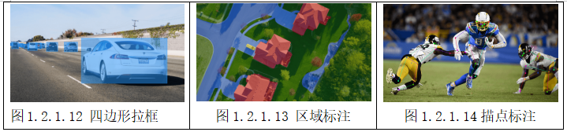
（3）常用标注数据集和标注工具#
随着人工智能、机器学习等行业对标注数据的海量需求，许多企业和研究机构纷纷推出了带标注的公开数据集。为了提高数据标注效率，一些标注工具和平台也应运而生。
(1)标注数据集
标注数据集主要划分为图像、视频、文本和语音标注数据集这4大类，表1.2.1.3描述了这些数据集的来源、用途和特性。ImageNet、COCO 和 PASCAL VOC 是3个典型的图像标注数据集。它们广泛应用于图像分类、定位和检测的研究中。由于ImageNet数据集拥有专门的维护团队，而且文档详细，它几乎成为了目前检验深度学习图像领域算法性能的“标准”数据集。COCO数据集是在微软公司赞助下生成的数据集，除了图像的类别和位置标注信息外，该数据集还提供图像的语义文本描述。因此，它也成为评价图像语义理解算法性能的“标准”数据集。Youtube-8M是谷歌公司从YouTube上采集到的超大规模的开源视频数据集，这些视频共计800万个，总时长为50万小时，包括4 800个类别。Yelp数据集由美国最大的点评网站提供，包括了470万条用户评价，15多万条商户信息，20万张图片和12个城市信息。研究者利用Yelp数据集不仅能进行自然语言处理和情感分析，还可以用于图片分类和图像挖掘。Librispeech数据集是目前最大的免费语音识别数据库之一，由近1 000h的多人朗读的清晰音频及其对应的文本组成。它是衡量当前语音识别技术最权威的开源数据集。
表1.2.1.3 部分常用的标注数据集
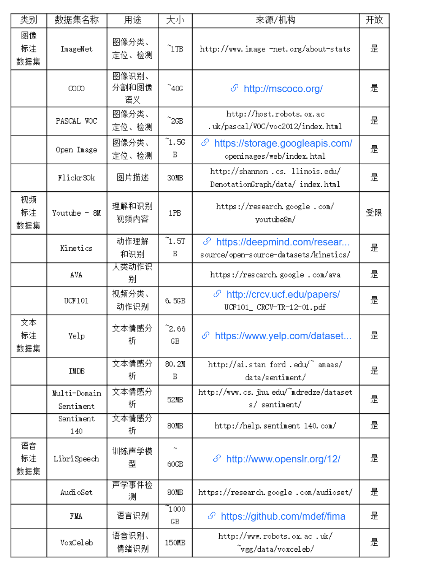
(2)开源数据标注工具
在选择数据标注工具时，需要考虑标注对象（如图像、视频、文本等）、标注需求（如画框、描点、分类等）和不同的数据集格式（比如 COCO、PASCAL VOC、JSON 等）。常用的开源的数据标注工具及其特点详见表1.2.1.4 ，其中除了COCO UI和LabelMe工具在使用时需要MIT许可外，其他工具均为开源使用。大部分的开源工具都可以运行在 Windows、 Linux、 Mac OS系统上，仅有个别工具是针对特定操作系统开发的（如 RectLabel）；而且这些开源工具大多只针对特定对象进行标注，只有一少部分工具（如精灵标注助手）能够同时标注图像、视频和文本。除了表中列举的标注工具外，市场上还有一些特殊功能的标注工具，例如人脸数据标注和3D点云标注工具。不同标注工具的标注结果会有一些差异，但很少有研究关注它们的标注效率和标注结果的质量。
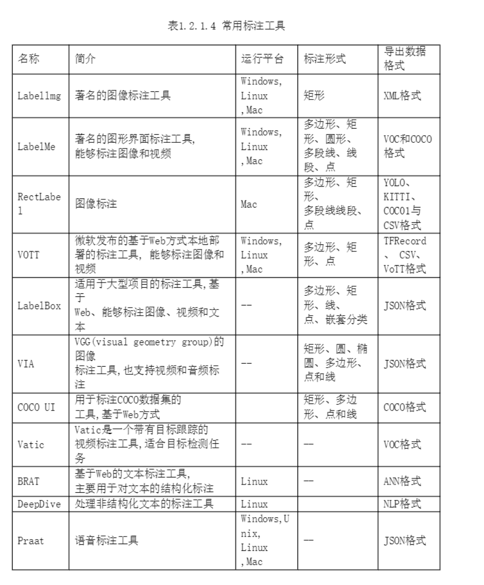
【素质素养养成】#
1.通过疫情期间智算中心的应用、AI芯片技术的学习培养学生科技强国的发展意识；
2.在数据采集、数据预处理、数据应用的过程中培养学生养成数据保护意识；
3.在学习算法不断迭代优化提升产品的准确率中培养学生精益求精的科学素养；
4.一定数量的数据投入模型训练就能创造智能，培养学生“量变到质变”辩证思维方式。
【任务实施】#
任务工作单1：算力认知
组号：_______ 姓名：______ 学号：______ 检索号:_____
引导问题
（1）阅读资料，总结算力是什么？
（2）为什么AI芯片比CPU更适合人工智能的运算？
（3）查找资料总结目前常用的AI芯片有哪几种？每一种对应的应用场景以及生产厂家。
（4）我们可以有哪些途径获取算力？
任务工作单2：算法认知
组号：_______ 姓名：______ 学号：______ 检索号:_____
引导问题
（1）什么叫算法
（2）总结监督学习的特征。
（3）体验Tensorflow playgroup神经网络的训练过程后，简述神经网络工作原理
（4）从AlphaGo训练过程中，你对算法有什么感悟？
任务工作单3：数据认知
组号：_______ 姓名：______ 学号：______ 检索号:_____
引导问题
(1) 数据源和采集方式有哪些？
(2) 为什么要对数据进行标注？。
(3) 数据标注有哪几种？比较通用的数据标准工具有哪些？
(4) 选择一种图像数据标注工具，完成交通项目的数据标注任务。
(4) 选择一种图像数据标注工具，完成交通项目的数据标注任务。
(5) 你知道如何获取开源的标注数据集吗？请至少列举一种。
任务工作单4：人工智能应用支撑讨论
组号：_______ 姓名：______ 学号：______ 检索号:_____
引导问题
(1) 各小组汇总资料，教师参与引导，小组长组织讨论总结为什么算力、算法和数据是人工智能应用支撑？我国人工智能技术基础情况怎么样？最后形成PPT。
(2) 记录完成任务过程的问题。
任务工作单5：人工智能应用支撑展示汇报
组号：_______ 姓名：______ 学号：______ 检索号:_____
引导问题
各小组推荐一位成员对工单4中的小组结论进行分享展示。
任务工作单6：人工智能应用支撑学习反思
组号：_______ 姓名：______ 学号：______ 检索号:_____
引导问题
自查、分析小组在探究什么是人工智能的过程中存在的不足及改进方法，并填写下表。
测试表格
（2）学习优秀：列举哪个组的内容或行为值得你学习。
评价反馈